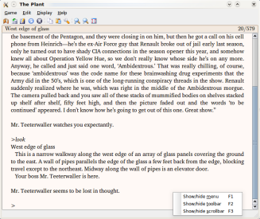
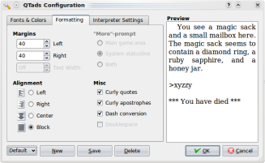
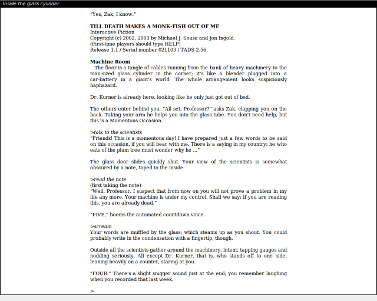

This page is kept only for historical purposes and contains information about the old, non-multimedia version of QTads.
The new version provides full multimedia/HTML capabilities.
This is the homepage of QTads; previous versions and some other useful information can be found at the QTads project page.
QTads is a GUI interpreter for Tads games, running under Unix-based systems (it has been tested in Linux, Mac OS X and FreeBSD, but it should compile and run in many more, like Solaris and Irix). Tads is a programming language for implementing Interactive Fiction (text-adventures). If you ever played an Infocom game like “Zork” or “Trinity”, or the classic game “Adventure” by Crowther and Woods (also known as “ADVENT”; it has also been ported to Tads), then you know what this is about.
The Tads compiler generates executables that run on the Tads Virtual Machine; much like Java. QTads is such a virtual machine; it runs Tads executables. Some Tads games use graphics and sound (Multimedia Tads), but QTads doesn't support that yet. You can play these games with QTads, but you won't see graphics or hear sounds. Only a subset of Multimedia Tads is supported (text-formatting effects and HTML character entities). On the plus-side, QTads supports more HTML tags than most other text-only interpreters.
Since QTads uses Trolltech's Qt library for its user interface, it should be easy to port to other platforms as well, including Windows and embedded devices (cell phones, PDAs, etc.) It supports Tads 2 as well as Tads 3 games (although the Tads 3 support is somewhat half-assed, because it lacks banners). A multimedia-enabled version for HTML Tads games will be available Real Soon Now™ (which means somewhere between next month, next year, or next century). Note though, that this will be a different interpreter; QTads itself will remain text-only.
QTads has a rather nice feature that none of the available Multimedia Tads interpreters can provide: text justification. This is only possible in non-Multimedia interpreters and is, more or less, the main reason QTads has been written.
QTads is known to compile with Qt 3.1 and above. You also need a good C++ compiler. GCC versions 2.95.x and above are known to work. (I recommend GCC 3.2 and higher.) Although it hasn't been tested yet, Project Builder in Mac OS X should work. Other compilers should work as well, by the way.
Here are some common and uncommon features of QTads:
Debian packages can be downloaded from your nearest Debian mirror, but the version provided is usually very old. You might be able to find a newer version in IFiction-FR (see below.)
Gentoo Linux users can usually find the most recent version either in Portage or in the “interactive-fiction” overlay which is accessible with the “layman” utility: “layman -L” followed by “layman -a interactive-fiction”. You can then “emerge qtads”. Note that the version in the overlay is keyworded as ~arch so you will have to keyword it in your package.keywords first.
Mandriva packages can be downloaded from your nearest mandriva mirror. Depending on your Mandriva version, you'll find the latest QTads either in contrib/release, contrib/updates or contrib/backports.
Both *.bz2 as well as *.gz compressed tar archives are provided. Since bz2 compresses better, this is what you should choose to minimize download time. The gz compressed archives are provided just in case you don't have the bzip2/bunzip2 utility installed.
Here you can only download the most current version of QTads. For past releases, visit the Project Page.
Time to choose:
QTads 1.9 - Source-code archive (bzip2)
A Unix tar archive compressed with bzip2 that contains everything you need to compile QTads on your system. Documentation is included.QTads 1.9 - Source-code archive (gzip)
Like the above, but compressed with GNU Zip (gzip). Get it only if you don't have the bzip2 program installed.IFiction-FR's “Packages for Linux” page
Sometimes provides recent RPM and/or Debian packages of QTads.
Here are some screenshots of QTads v1.8 running in KDE 3. (Note that QTads runs in every window manager or desktop environment, not just in KDE. But if you happen to use KDE 3, QTads will support it natively, as can be seen in the screenshots below.) You can click on the images to enlarge or download them, since the ones below are just miniatures.
|

Michael J. Roberts' “The Plant” |

The configuration dialog. |
|

Michael J. Sousa's/Jon Ingold's “Till Death Makes A Monk-Fish Out Of Me” in fullscreen-mode |
|
The QTads distribution doesn't contain games, but fear not! There's a large repository for IF-related stuff (with lots of games!) called The Interactive Fiction Archive.
Since the archive is actually just a (huge) bunch of data thrown together (more or less), a nice fellow has created a site that will guide you through the archive. The site is called Baf's Guide to the IF Archive and contains many cool things, like a “Genre Map” for the games located in the archive along with descriptions, reviews and ratings, links, and other useful things. Make sure to check it out!
Interactive Fiction is alive and kicking! New games are released all the time. Some of them are even better that Infocom or Legend classics.
There are two Usenet newsgroups for IF related things. The first is RGIF, which is short for:
where people are talking about IF games in general; things they like in games, things they don't like, things they hope to see in future games, requests for hints and solutions, reviews of games, announcements of new games/software or happenings, stuff like that.
The other newsgroup is RAIF, which stands for:
This newsgroup is for everyone who is interested in creating games. Most IF authors use to hang around there, so this newsgroup is an excellent place to post questions about IF theory or authorship (like programming questions).
QTads and its homepage are hosted by SourceForge, which I recommend to every Open Source project. It provides services like CVS/Subversion as well as web space for your project.
{kind=link}
{kind=link}
{kind=link}